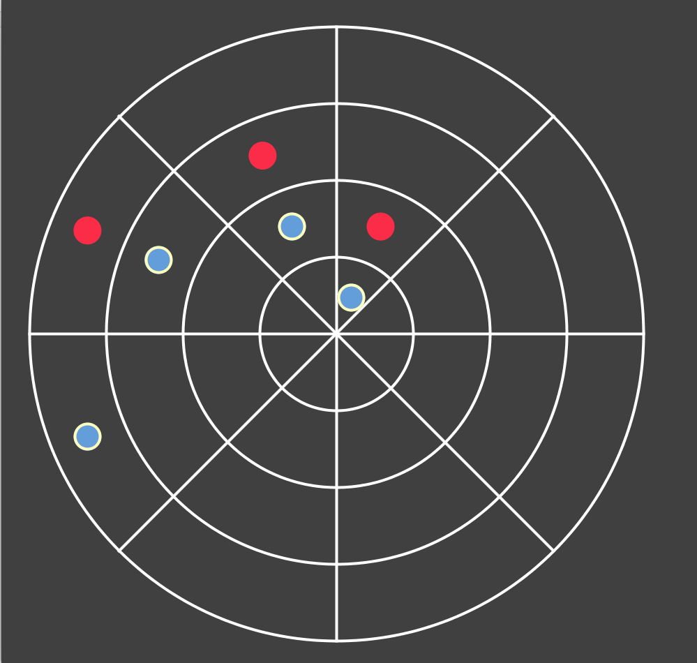
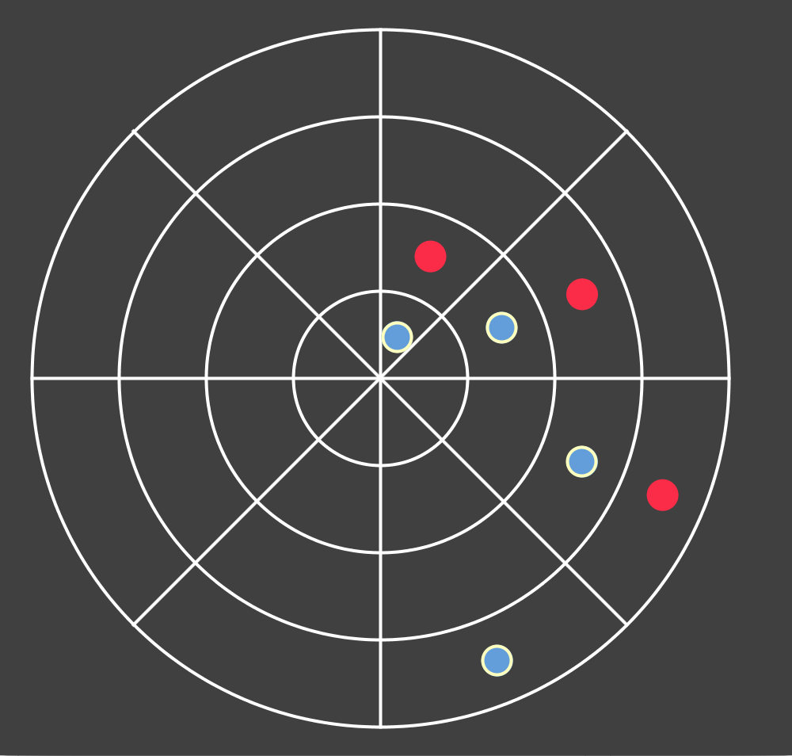
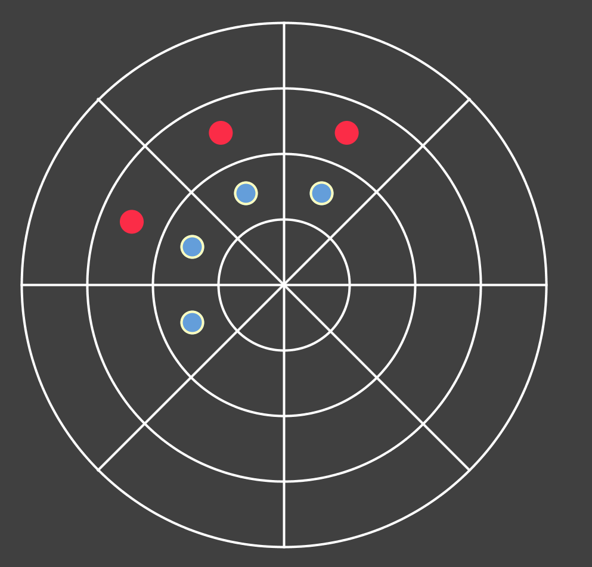
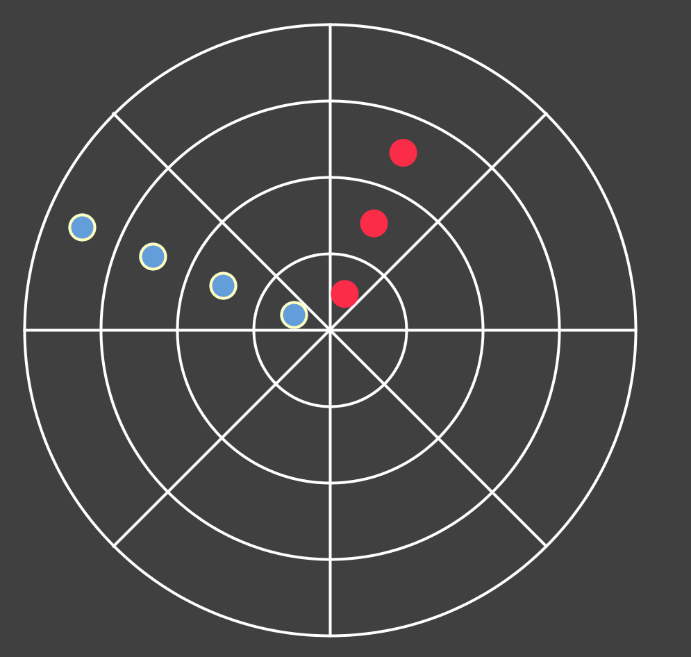

Coordinates is Tic-tac-toe on a polar coordinate grid!
It's more challenging (therefore more fun) than regular Tic-tac-toe.
You win when you get four pieces in a row in any of these formations:
Counterclockwise Spiral
Clockwise Spiral
Circular (same radius)
Outward (same angle)
